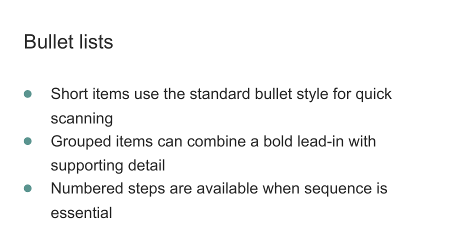

Modular onboarding booklet
When someone joins a research group, much of what they need to know already exists, but rarely in one place.
In our group, onboarding information was distributed across documents, online resources, procedures, and the knowledge of different colleagues. We also had an older printed manual containing some of this information, but parts of it were outdated and it was difficult to connect to some of the material we host online.
While completing my Lean Green Belt course, I chose to work on our onboarding process. The broader aim was to make onboarding more consistent and predictable, helping new colleagues become operational and safety-compliant without depending so heavily on who happened to guide them.
This involved more than producing a document. We adapted our readiness signal, aligned the staff around a revised procedure for newcomers, and clarified the steps needed before someone could begin working independently.
One part of that improvement was a new onboarding booklet: a single place for practical information, background about the group, safety guidance, useful contacts, and standardized onboarding steps.
Why a booklet?
During one of my first internships at CTEEP, I received a small onboarding manual. I still remember how useful it was not only for finding practical information, but also for understanding the organization and how people worked together.
That context can help a newcomer feel that they belong. It explains not just what they need to do, but also where they have arrived and how the group operates.
With that experience in mind, I created the first version of our new booklet in PowerPoint.
PowerPoint worked beautifully for the initial design. It gave me complete visual control and made it easy to experiment with pages, colors, images, and layouts.
The problem appeared when the content began to change.
If a chapter became longer, later pages had to be moved and reorganized manually. A new layout option often required editing several slides. Even a relatively small change could create work throughout the document.
The booklet looked good, but maintaining it did not scale.
From manual layout to modular publishing
My first idea was to rebuild it in LaTeX, which is well known for producing structured and attractive documents. After discussing the requirements with ChatGPT, however, we landed on Typst.
Typst became the rendering layer, but the project needed more than a typesetting language. The content had to remain simple to edit, while the system needed to understand spacing, page capacity, related sections, images, lists, people, QR codes (which I used for easy access to online resources), and intentional blank pages.
The resulting system has three main layers:
- TOML files contain the editable content and design settings.
- A Python planner validates the content, estimates the required space, groups related elements, and assigns everything to pages.
- Typst reads the resulting book plan and renders the finished PDFs.
The Python planner is the brain of the system. It translates straightforward content files into a measured page plan while keeping the output predictable.
The build produces both an A4 landscape version for reviewing spreads and an A5 version containing separate pages for printing.
A small example
Suppose I want to add a short list to a chapter. In a file such as content/chapters/01-chapter.toml, I can write:
[[sections]]
id = "grouped-bullets"
type = "bullets"
title = "Bullet lists"
items = [
"Short items use the standard bullet style for quick scanning",
"Grouped items can combine a bold lead-in with supporting detail",
"Numbered steps are available when sequence is essential",
]The planner measures the title and list items, decides where the section fits, and passes the page plan to Typst.
The PDF then shows a consistently formatted section using the typography, colors, bullet style, margins, and spacing defined by the project theme.

The same approach can be used for paragraphs, numbered steps, images, QR links, shared-file paths, highlighted messages, personnel information, and other reusable content patterns.
This means that most changes only require editing the content. The layout rules remain centralized.
Making it reusable
I was very happy with the result. Because the system is modular, I also realized that it could be useful beyond our research group.
Colleagues from other faculties have shown interest in the booklet. I do not know whether similar versions have been implemented elsewhere yet, but it made me think that sharing the underlying system could help other groups create their own onboarding manuals or completely different kinds of information booklets.
Naturally, I could not publish our internal information. Instead, I created a generic showcase containing fictional people, sample content, replaceable images, and explanations of the available components.
The public version includes:
- Editable TOML content
- Configurable typography, colors, spacing, and page geometry
- Reusable section types
- Automatic page planning
- A simple live preview
- Spread and individual-page PDF exports
- Example content and detailed documentation
The project is available on GitHub:
Modular Booklet Showcase on GitHub
It was designed around my own requirements and visual layout, so there will undoubtedly be combinations I have not tested yet. If you use it and something behaves unexpectedly, please let me know. That feedback can help me continue improving the planner.